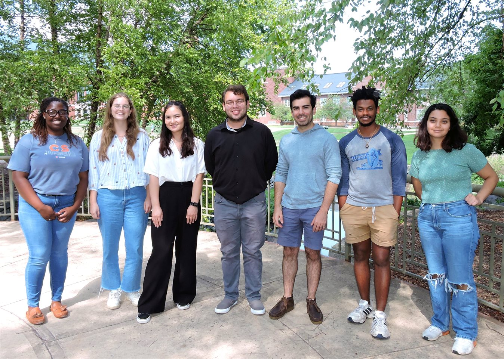

I am a fourth-year Ph.D. student in the Department of Computer Science at the University of Illinois at Urbana-Champaign (UIUC). I am co-advised by Professors Gang Wang and Kirill Levchenko.
My primary areas of interest lie in large-scale data analysis and studying the user experience for various privacy tools.
News
[November 21, 2023] I am pleased to annouce my paper, Does It Matter Who Said It? Exploring the Impact of Deepfake Profiles on User Perception Towards Disinformation has been accepted for publication at the 2024 International AAAI Conference ON Web And Social Media (ICWSM). Can't wait to join other passionate researchers in Buffalo, NY next Summer!
[March 1, 2023] I am so happy to annouce the opening of my Etsy Shop TheAdventureCenter where I will be offering STEM educational materials for elementary-age kids! Check out our first lisitng ABCs of Computer Science.
[Sept 12, 2022] My very first, first-author Conference Paper has been accepted to GROUP 2023! Sanibel Island, FL here I come!
[Sept 8, 2022] I'm so grateful for the opprotunity to have been a guest speaker on a Birds of a Feather panel on Navigating Your Advisor-Advisee Relationship at the 2022 Richard Tapia Conference.
[Sept 6, 2022] My first-author workshop paper "Casing the Vault: Security Analysis of Vault Applications" has been accepted to WPES '22!
[Aug 22, 2022] Increasing representation in S[T]EM fields is one of my passions and because of that I am so thrilled to be apart of the inaugural group of Grainger Engineering Graduate Student Diversity Ambassadors (DAs)!

[April 4, 2022] I am so excited and honored to have been awarded the NSF GRFP! To my friends, family, advisors, and peers thank you for your constant support!

Education
University of Illinois at Urbana-Champaign, 06/2020 - Present
Ph.D. in Computer ScienceSpelman College, 08/2016 - 05/2020
B.S. Computer Science
Publications
-
Margie Ruffin, Haeseung Seo, Aiping Xiong, Gang Wang. 2024. Does It Matter Who Said It? Exploring the Impact of Deepfake Profiles on User Perception Towards Disinformation. In 2024 International AAAI Conference on Web and Social Media (ICWSM).
Margie Ruffin, Kirill Levchenko, and Gang Wang. 2023. Explaining Why Fake Photos are Fake: Does It Work? In 2023 ACM International Conference on Supporting Group Work (GROUP), 23 pages.
PDF | SLIDESMargie Ruffin, Israel Lopez-Toldeo, Kirill Levchenko, and Gang Wang. 2022. Casing the Vault: Security Analysis of Vault Applications. In Proceedings of the 21st Workshop on Privacy in the Electronic Society (WPES ’22), November 7, 2022, Los Angeles, CA, USA. ACM, New York, NY, USA, 6 pages
PDF | SLIDESNias, J., Hampton, L., Sampson,P. and Ruffin, M. 2020. To Appear. Decolonizing Technologies for Preserving Cultural and Societal Diversity. CHI 2020 Extended Abstracts, April 25 - 30, 2020, Honolulu, HI, USA.
PDFMargie Ruffin, Jaye Nias, Kayla Taylor, Gabrielle Singleton, and Amber Sylvain. 2020. Character Development to Facilitate Retention in a Storytelling Robot. In 2020 ACM Southeast Conference (ACMSE 2020), April 2–4, 2020, Tampa, FL, USA. ACM, New York, NY, USA, 4 pages. https://doi.org/10.1145/3374135.3385315
PDFJaye Nias and Margie Ruffin. 2020. CultureBot: A Culturally Relevant Humanoid Robotic Dialogue Agent. In 2020 ACM Southeast Conference (ACMSE 2020), April 2–4, 2020, Tampa, FL, USA. ACM, New York, NY, USA, 4 pages. https://doi.org/10.1145/3374135.3385306
PDF
Research Experience
University of Illinois at Urbana-Champaign | Advisors Gang Wang and Kirill Levchenko -- Champaign, IL – Research Assistant | June 2020 – Present
International Business Machines (IBM) | Advisors Gheorghe Almasi, Hubertus Franke, Hamid Adebayo -- Yorktown Heights, NY – Research Assistant | May 2023 – August 2023
Lawrence Livermore National Lab | Advisor Brian Kelley -- Livermore, CA – Graduate Researcher | June 2020 – August 2021
Georgia Tech Research Institute | Advisors Michael Brown and Brian Schultz -- Atlanta, GA – Student Researcher | October 2019 – May 2020
Spelman College | Advisor Raquel Hill -- Atlanta, GA - Student Researcher | September 2019 – May 2020
Spelman College | Advisor Jaye Nias -- Atlanta, GA - SpelBots Team Research Leader | January 2019 – May 2020
Spelman College | Advisor Jaye Nias -- Atlanta, GA - Clair Booth Luce Research Fellow | September 2018 – May 2020
Honors and Awards
- NSF Graduate Research Fellowship Program | 2022 – 2025
- Alfred P. Sloan Scholar | 2020 – 2025
- Grainger College of Engineering SURGE Fellowship | 2020 – 2025
- UIUC Graduate College Fellowship | 2020 – 2025
- Magna Cum Laude, Spelman College | 2020
- Phi Beta Kappa, Spelman College |2017 – 2020